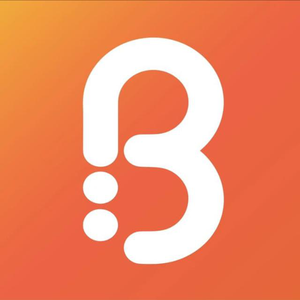
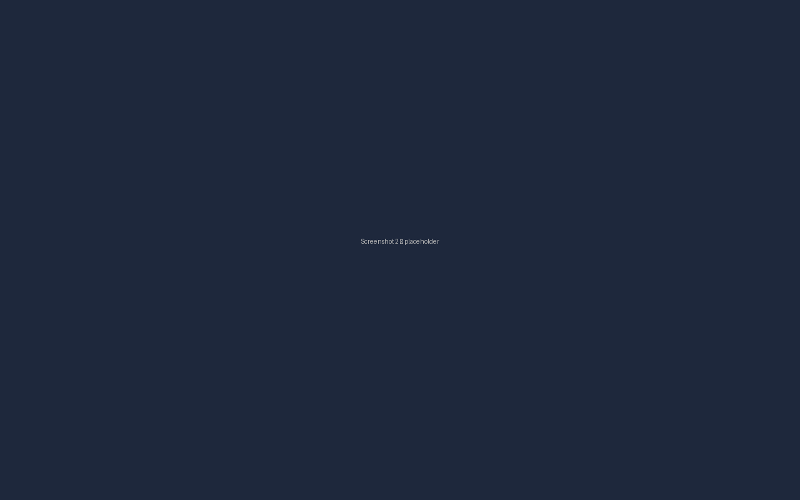
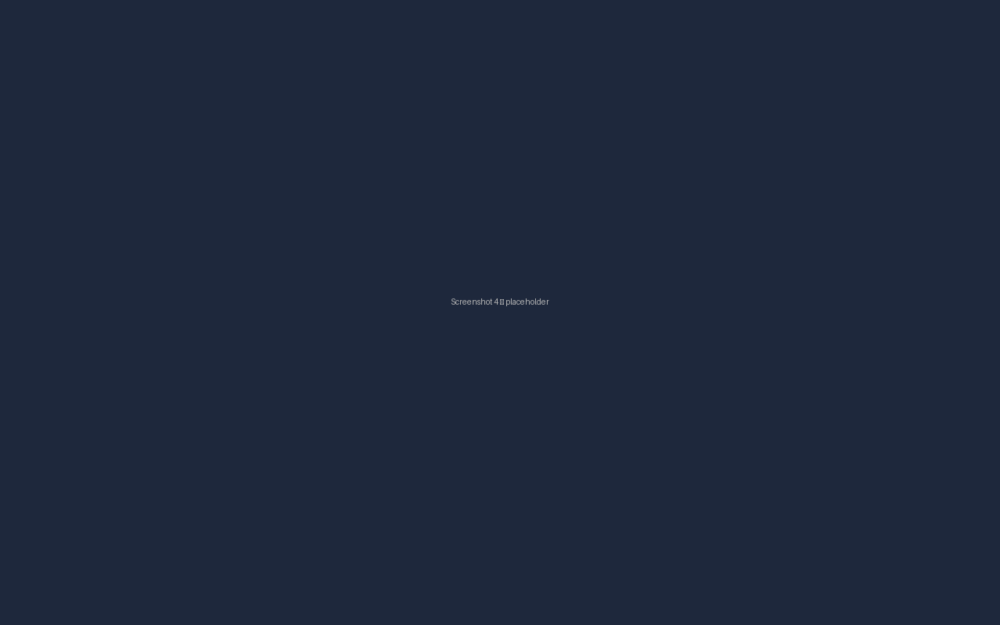

Connect your Odoo Point of Sale to the Bonat loyalty platform — reward your customers, redeem points at checkout, and grow repeat business. This edition contains no server-side Python code, so it also runs on Odoo Online (odoo.com-hosted) databases.
Odoo 19 · Odoo Online, Odoo.sh & On-Premise · KSA Requires a paid Bonat merchant accountLive connection between Odoo POS and the Bonat loyalty engine. Customer points balance and eligibility are checked in real time at the POS screen.
Cashiers can apply Bonat reward codes during any POS order. Discounts are validated against the Bonat API and applied instantly.
Your POS product catalogue is pushed to Bonat automatically each time a POS session opens — no manual export, no server access needed.
A dedicated Bonat section in POS Configuration lets merchants enter their API key and toggle the integration on or off.
Odoo Online databases cannot run third-party Python code, which is why most POS connectors are unavailable there. This edition of Bonat Loyalty is built entirely from data and JavaScript, so it installs on Odoo Online as an imported module:
Settings → Developer Tools → Activate the developer mode.
Apps, choose
Import Module from the top menu, upload the zip, and click
Install.
On Odoo.sh or on-premise databases the same zip can be imported the same way, or placed on the addons path like any other module.
This module is free to install, but it is a connector, not a standalone loyalty engine. Reward validation, redemption, and customer data are served by the Bonat platform, which requires an active paid Bonat merchant subscription. Without a Bonat account, the module installs and its settings are visible, but redemption calls will fail with "integration not enabled" or "API key missing." Contact odoo@bonat.io or visit bonat.io to set up an account. Want to try the POS flow first? Enable Demo Mode in settings to exercise the full reward/redeem/checkout experience with no Bonat account.
Point of Sale → Configuration → Settings,
locate the Bonat section, paste the API Key and Merchant ID
Bonat gave you, and save.
Bonat is a loyalty and customer-engagement platform purpose-built for merchants in Saudi Arabia. The platform integrates with your POS, your marketing channels, and your customer database to drive repeat visits and higher basket sizes. The Odoo integration module extends that capability directly into Odoo POS — so merchants running Odoo in KSA get seamless loyalty without a separate tablet or manual point entry, including on odoo.com-hosted databases.


For technical questions, setup help, or integration issues, reach the Bonat team at:
Email: odoo@bonat.io
Website: https://bonat.io
License: OPL-1 | Compatible with Odoo 19.0 — Odoo Online, Odoo.sh & On-Premise